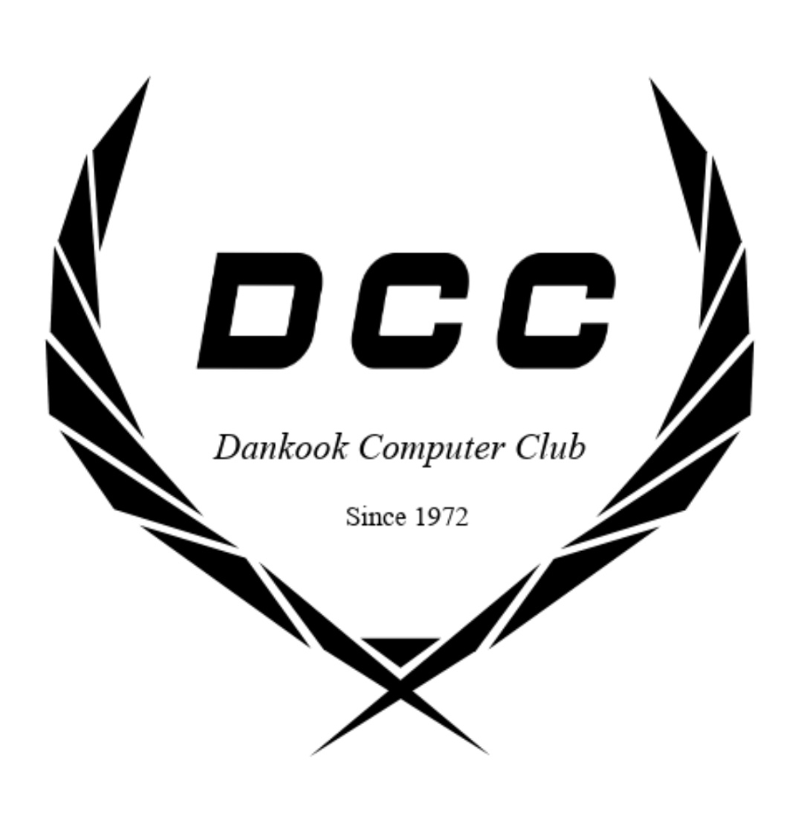

컴퓨터 학습을 원하는 어스인
▶ DCC ◀

since 1972. DANKOOK COMPUTER CLUB
주요활동
- 학기 별 스터디(Matlab, python, PSpice, 컴활 등)
- 연 1회 창립제 및 선배특강
- 개강총회 및 MT 등의 단결활동
- 대학연합동아리 UNICOSA와의 교류(코딩스터디, 대회 및 연합 OT, MT)
DCC 자랑
- 자유롭게 사용가능한 프린터기 및 컴퓨터 3대
- 공강시간에 함께하기 좋은 카드 및 보드게임
- 함께 영화 및 축구도 볼 수 있는 빔프로젝터
- 마지막으로 신입생을 두 팔 벌려 환영하는 짱친절한 부원들!
▶ Aegis ◀
✔ Aegis는 컴퓨터를 공부하기를 원하는 학생들이 모여 연구 및 학습하는 학술동아리입니다.
✔ Aegis는 컴퓨터와 관련된 다양한 활동을 진행합니다.
1. 인근 학교 학생들을 대상으로 코딩 수업을 진행하는 봉사활동
2. Aegis 졸업자들을 초청하여 진행하는 세미나
3. 해킹대회와 코딩대회 또는 해커톤
4. 컴퓨터 기초부터 심화까지 다양한 주제의 소규모 스터디
5. Kucis(대학정보보호동아리연합회) 가입 및 활동
6. 대외 컨퍼런스 또는 대회 참여
✔ 컴퓨터를 하나도 몰라도 관심과 흥미가 있는 모든 단국대학교 학생들은 가입이 가능합니다.
✔ 문의
동아리방 : 혜당관 530호
인스타그램 : @dku_aegis
▶ CAGI ◀
창조적이고 진취적인 신기술 문화의 개척을 위한 컴퓨터그래픽의 연구를 통한 자아발전과 미래지향적인 사고방식 함양